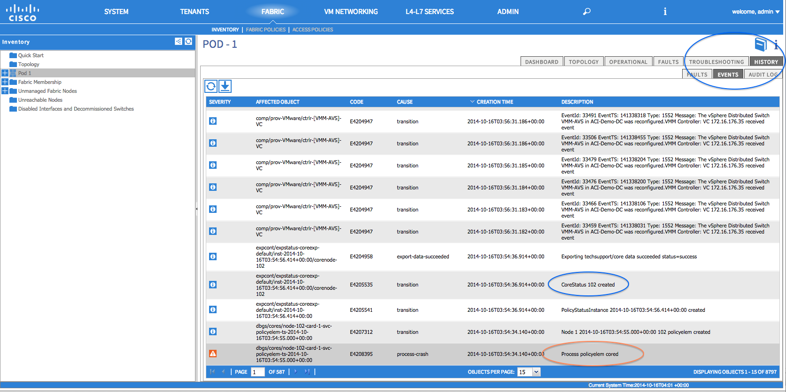
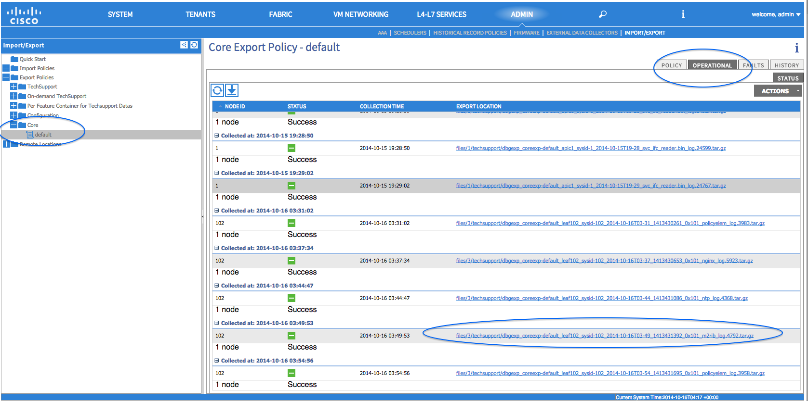
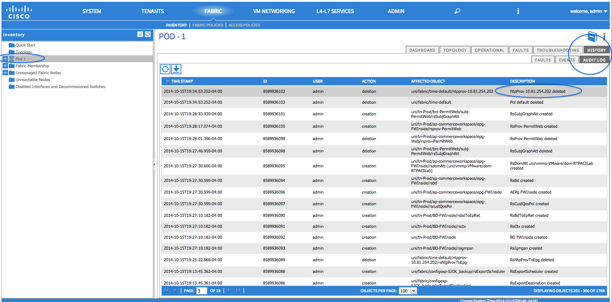

ACI Fabric Node and Process Crash Troubleshooting¶
Overview¶
The ACI switch node has numerous processes which control various functional aspects on the system. If the system has a software failure in a particular process, a core file will be generated and the process will be reloaded.
If the process is a Data Management Engine (DME) process, the DME process will restart automatically. If the process is a non-DME process, it will not restart automatically and the switch will reboot to recover.
This section presents an overview of the various processes, how to detect that a process has cored, and what actions should be taken when this occurs.
DME Processes:¶
The essential processes running on an APIC can be found through the CLI. Unlike the APIC, the processes that can be seen via the GUI in FABRIC->INVENTORY->Pod 1->(node) will show all processes running on the leaf.
CLI:¶
With the command ps-ef | grep svc_ifc:
rtp_leaf1# ps -ef |grep svc_ifc
root 3990 3087 1 Oct13 ? 00:43:36 /isan/bin/svc_ifc_policyelem --x
root 4039 3087 1 Oct13 ? 00:42:00 /isan/bin/svc_ifc_eventmgr --x
root 4261 3087 1 Oct13 ? 00:40:05 /isan/bin/svc_ifc_opflexelem --x -v dptcp:8000
root 4271 3087 1 Oct13 ? 00:44:21 /isan/bin/svc_ifc_observerelem --x
root 4277 3087 1 Oct13 ? 00:40:42 /isan/bin/svc_ifc_dbgrelem --x
root 4279 3087 1 Oct13 ? 00:41:02 /isan/bin/svc_ifc_confelem --x
rtp_leaf1#
Each of the processes running on the switch writes activity to a log file on the system. These log files are bundled as part of the techsupport file but can be found via CLI access in /tmp/logs/ directory. For example, the Policy Element process log output is written into /tmp/logs/svc_ifc_policyelem.log.
The following is a brief description of the DME processes running on the system. This can help in understanding which log files to reference when troubleshooting a particular process or understand the impact to the system if a process crashed:
| Process | Function |
|---|---|
| policyelem | Policy Element: Process logical MO from APIC and push concrete model to the switch |
| eventmgr | Event Manager: Processes local faults, events, health score |
| opflexelem | Opflex Element: Opflex server on switch |
| observerelem | Observer Element: Process local stats sent to APIC |
| dbgrelem | Debugger Element: Core handler |
| nginx | Web server handling traffic between the switch and APIC |
Identify When a Process Crashes:¶
When a process crashes and a core file is generated, a fault as well as an event is generated. The fault for the particular process is shown as a “process-crash” as shown in this syslog output from the APIC:
Oct 16 03:54:35 apic3 %LOG_LOCAL7-3-SYSTEM_MSG [E4208395][process-crash][major][subj-[dbgs/cores/node-102-card-1-svc-policyelem-ts-2014-10-16T03:54:55.000+00:00]/rec-12884905092]Process policyelem cored
When the process on the switch crashes, the core file is compressed and copied to the APIC. The syslog message notification comes from the APIC.
The fault that is generated when the process crashes is cleared when the process is restarted. The fault can be viewed via the GUI in the fabric history tab at FABRIC->INVENTORY->Pod 1. In this example, node102 Policy Element crashed:
{kind=link}
Collecting the Core Files:¶
The APIC GUI provides a central location to collect the core files for the fabric nodes.
An export policy can be created from ADMIN -> IMPORT/EXPORT in Export Policies -> Core. However, there is a default core policy where files can be downloaded directly. As shown in this example:
{kind=link}
The core files can be accessed via SSH/SCP through the APIC at /data/techsupport on the APIC where the core file is located. Note that the core file will be available at /data/techsupport on one APIC in the cluster, the exact APIC that the core file resides can be found by the Export Location path as shown in the GUI. For example, if the Export Location begins with “files/3/”, the file is located on node 3 (APIC3).
Problem Description¶
Process on fabric node has crashed and either restarts automatically or leads to the switch restarting.
Symptom 1¶
Process on switch fabric crashes. Either the process restarts automatically or the switch reloads to recover.
Verification¶
As indicated in the overview section, if a DME process crashes, it should restart automatically without the switch restarting. If a non-DME process crashes, the process will not automatically restart and the switch will reboot to recover.
Depending on which process crashes, the impact of the process core will vary.
When a non-DME process crashes, this will typical lead to a HAP reset as seen on the console:
[ 1130.593388] nvram_klm wrote rr=16 rr_str=ntp hap reset to nvram
[ 1130.599990] obfl_klm writing reset reason 16, ntp hap reset
[ 1130.612558] Collected 8 ext4 filesystems
Check the appropriate process log:¶
The process which crashes should have at some level of log output prior to the crash. The output of the logs on the switch are written into the /tmp/logs directory. The process name will be part of the file name. For example, for the Policy Element process, the file is svc_ifc_policyelem.log
rtp_leaf2# ls -l |grep policyelem
-rw-r--r-- 2 root root 13767569 Oct 16 00:37 svc_ifc_policyelem.log
-rw-r--r-- 1 root root 1413246 Oct 14 22:10 svc_ifc_policyelem.log.1.gz
-rw-r--r-- 1 root root 1276434 Oct 14 22:15 svc_ifc_policyelem.log.2.gz
-rw-r--r-- 1 root root 1588816 Oct 14 23:12 svc_ifc_policyelem.log.3.gz
-rw-r--r-- 1 root root 2124876 Oct 15 14:34 svc_ifc_policyelem.log.4.gz
-rw-r--r-- 1 root root 1354160 Oct 15 22:30 svc_ifc_policyelem.log.5.gz
-rw-r--r-- 2 root root 13767569 Oct 16 00:37 svc_ifc_policyelem.log.6
-rw-rw-rw- 1 root root 2 Oct 14 22:06 svc_ifc_policyelem.log.PRESERVED
-rw-rw-rw- 1 root root 209 Oct 14 22:06 svc_ifc_policyelem.log.stderr
rtp_leaf2#
There will be several files for each process located at /tmp/logs. As the log file increases in size, it will be compressed and older log files will be rotated off. Check the core file creation time (as shown in the GUI and the core file name) to understand where to look in the file. Also, when the process first attempts to come up, there be an entry in the log file that indicates “Process is restarting after a crash” that can be used to search backwards as to what might have happened prior to the crash.
Check what activity occurred at the time of the process crash:¶
A process which has been running has had some change which then caused it to crash. In many cases the changes may have been some configuration activity on the system. What activity occurred on the system can be found in the audit log history of the system.
For example, if the ntp process crashes, going back around the time of the crash, in this example there was a change where a ntp provider was deleted:
{kind=link}
Collect Techsupport and Core File and Contact the TAC:¶
A process crashing should not normally occur. In order to understand better why beyond the above steps it will be necessary to decode the core file. At this point, the file will need to be collected and provided to the TAC for further processing.
Collect the core file (as indicated above how to do this) and open up a case with the TAC.
Verification¶
As indicated in the overview section, if a DME process crashes, it should restart automatically without the switch restarting. If a non-DME process crashes, the process will not automatically restart and the switch will reboot to recover. However in either case if the process continuously crashes, the switch may get into a continuous reload loop or end up in the BIOS loader prompt.
[ 1130.593388] nvram_klm wrote rr=16 rr_str=policyelem hap reset to nvram
[ 1130.599990] obfl_klm writing reset reason 16, policyelem hap reset
[ 1130.612558] Collected 8 ext4 filesystems
Break the HAP reset loop:¶
First step is to attempt to get the switch back into a state where further information can be collected.
If the switch is continuously rebooting, when the switch is booting up, break into the BIOS loader prompt through the console by typing CTRL C when the switch is first part of the boot cycle.
Once the switch is at the loader prompt, enter in the following commands:
cmdline no_hap_reset
boot <file>
The cmdline command will prevent the switch from reloading with a hap reset is called. The second command will boot the system. Note that the boot command is needed instead of a reload at the loader as a reload will remove the cmdline option entered.
Though the system should now remain up to allow better access to collect data, whatever process is crashing will impact the functionality of the switch.
Check the appropriate process log:¶
The process which crashes should have at some level of log output prior to the crash. The output of the logs on the switch are written into the /tmp/logs directory. The process name will be part of the file name. For example, for the Policy Element process, the file is svc_ifc_policyelem.log
rtp_leaf2# ls -l |grep policyelem
-rw-r--r-- 2 root root 13767569 Oct 16 00:37 svc_ifc_policyelem.log
-rw-r--r-- 1 root root 1413246 Oct 14 22:10 svc_ifc_policyelem.log.1.gz
-rw-r--r-- 1 root root 1276434 Oct 14 22:15 svc_ifc_policyelem.log.2.gz
-rw-r--r-- 1 root root 1588816 Oct 14 23:12 svc_ifc_policyelem.log.3.gz
-rw-r--r-- 1 root root 2124876 Oct 15 14:34 svc_ifc_policyelem.log.4.gz
-rw-r--r-- 1 root root 1354160 Oct 15 22:30 svc_ifc_policyelem.log.5.gz
-rw-r--r-- 2 root root 13767569 Oct 16 00:37 svc_ifc_policyelem.log.6
-rw-rw-rw- 1 root root 2 Oct 14 22:06 svc_ifc_policyelem.log.PRESERVED
-rw-rw-rw- 1 root root 209 Oct 14 22:06 svc_ifc_policyelem.log.stderr
rtp_leaf2#
There will be several files for each process located at /tmp/logs. As the log file increases in size, it will be compressed and older log files will be rotated off. Check the core file creation time (as shown in the GUI and the core file name) to understand where to look in the file. Also, when the process first attempts to come up, there be an entry in the log file that indicates “Process is restarting after a crash” that can be used to search backwards as to what might have happened prior to the crash.
Check what activity occurred at the time of the process crash:¶
A process which has been running has had some change which then caused it to crash. In many cases the changes may have been some configuration activity on the system. What activity occurred on the system can be found in the audit log history of the system.
For example, if the ntp process crashes, going back around the time of the crash, in this example there was a change where a ntp provider was deleted:
Collect Core File and Contact the Cisco TAC:¶
A process crashing should not normally occur. In order to understand better why, beyond the above steps, it will be necessary to decode the core file. At this point, the file will need to be collected and provided to the Cisco TAC for further processing.
Collect the core file (as indicated above how to do this) and open up a support case with the Cisco TAC.